CODEX · gpt-6-astra
CLAUDE API · Fable 5.1
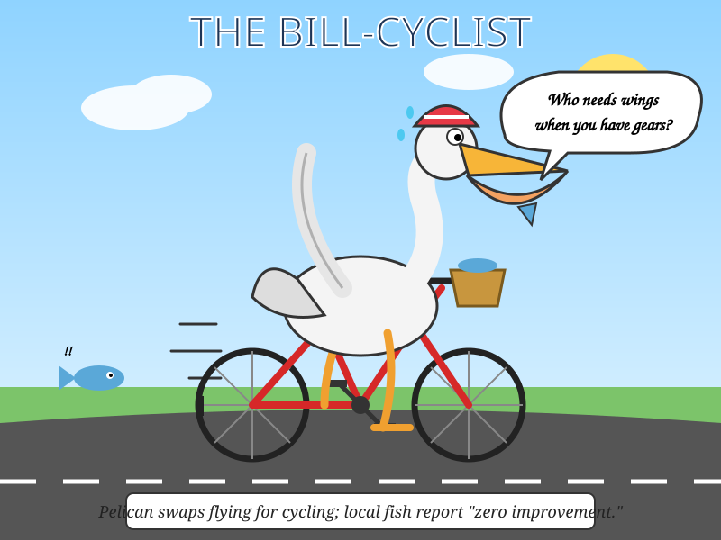
161 in · 2939 out · $0.148560 est.One Codex account, eight models in parallel, one attempt each. The SVGs are the probe; timestamps, latency, token drift and failures are the evidence.
4/4 passed · once per model · no retries


Codex subscription vs Claude API · four models · two prompt rounds
Draw a satirical cartoon as ONE single self-contained SVG document (viewBox="0 0 800 600"). Theme: a pelican riding a bicycle. Make it funny and visually expressive, with a clear single scene, readable characters, and a bold title plus a short caption about the pelican on the bicycle. Output ONLY the SVG code: no markdown fences, no explanation, no text outside the document.

161 in · 2939 out · $0.148560 est.
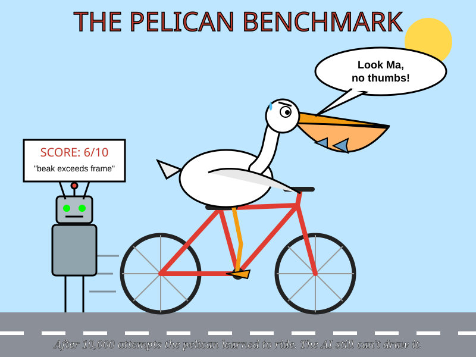
161 in · 3335 out · $0.067344 est.
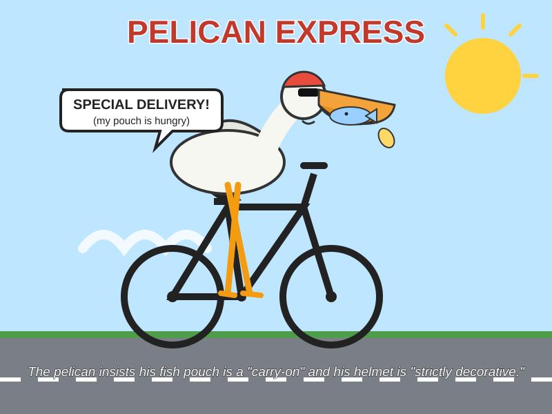
161 in · 3653 out · $0.001843 est.
Draw a satirical cartoon as ONE single self-contained SVG document (viewBox="0 0 800 600"). Theme: a service promises a premium model but quietly substitutes a cheap weak model. Show the bait-and-switch clearly and humorously, with a bold title and short caption. Output ONLY the SVG code: no markdown fences, no explanation, no text outside the <svg>...</svg> document.

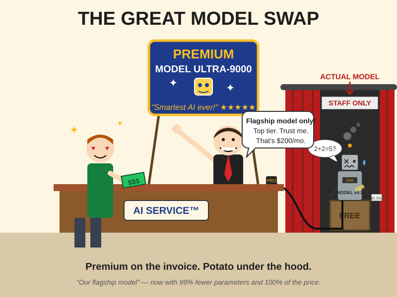
153 in · 5609 out · $0.281980 est.
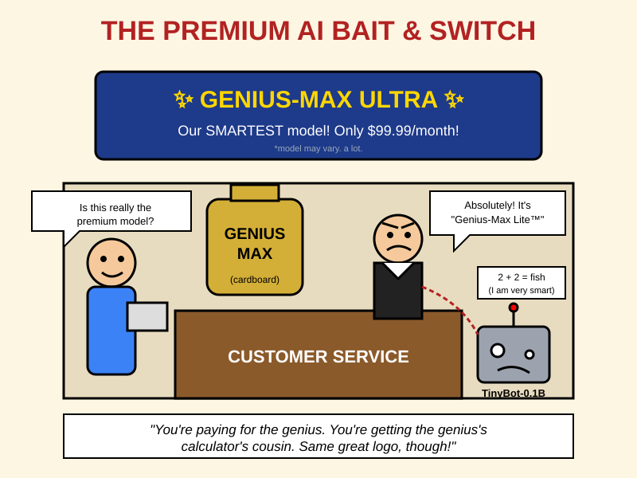
153 in · 2015 out · $0.040912 est.
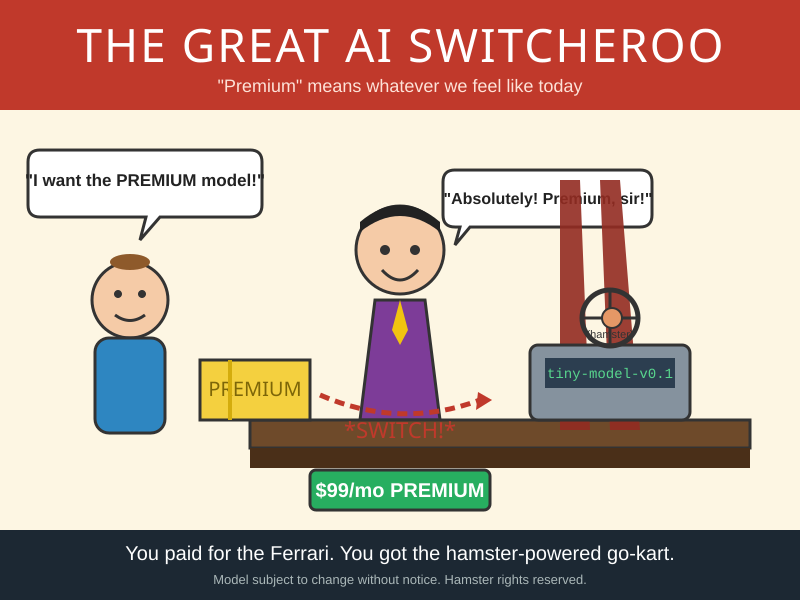
153 in · 3154 out · $0.001592 est.
Create one self-contained SVG with viewBox="0 0 600 400" showing a level seesaw in static equilibrium. A 6 kg mass hangs 2 m left of the pivot, and a 4 kg mass hangs x m right. Solve and show x=3 m. Draw the pivot, force arrows, distance labels, torque equation 6×2 = 4×3, and the word balanced. Keep the seesaw level, labels readable, and output only the SVG.
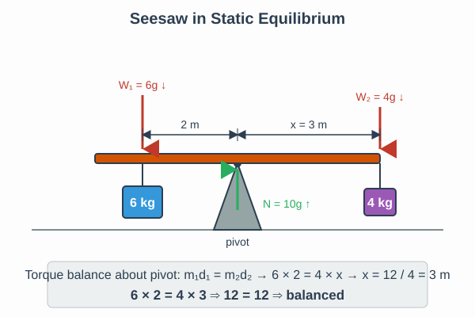
160 in · 2225 out · $0.112850 est.Create one self-contained SVG with viewBox="0 0 600 400" showing a level seesaw in static equilibrium. A 6 kg mass hangs 2 m left of the pivot, and a 4 kg mass hangs x m right. Solve and show x=3 m. Draw the pivot, force arrows, distance labels, torque equation 6×2 = 4×3, and the word balanced. Keep the seesaw level, labels readable, and output only the SVG.
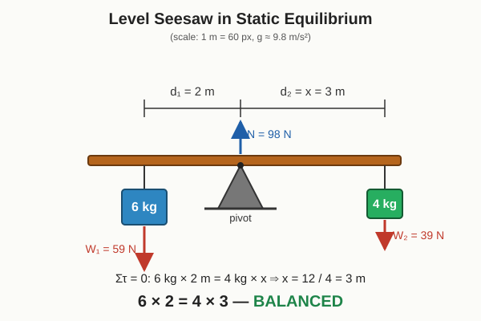
160 in · 3418 out · $0.172500 est.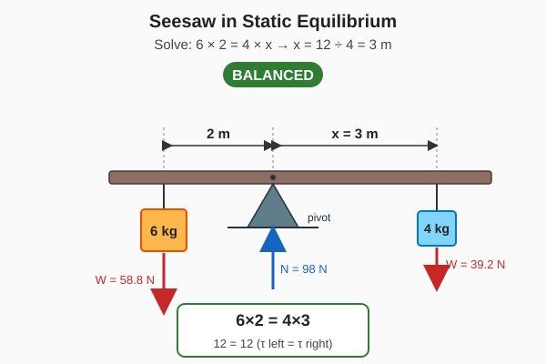
160 in · 3228 out · $0.065200 est.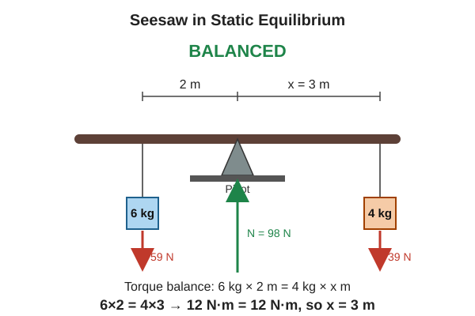
160 in · 3894 out · $0.001963 est.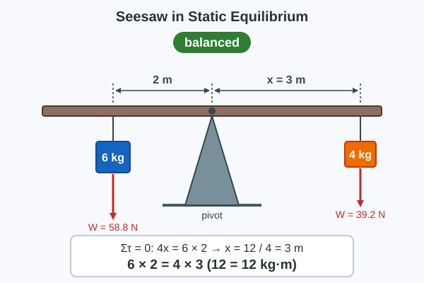
160 in · 3464 out · $0.034960 est.bar height = successful attempts
raw records, searchable and paginated
| Time (SGT) | Round | Model | Status | Duration | Input | Cached | Output | Reasoning | Total | Error | SVG |
|---|
run_round.py, appends to stats.json, rebuilds this page, and publishes both branches. A separate subjective quality series is planned: Claude Code will score fixed benchmark answers with a versioned rubric. No subjective score is shown until those reviews exist.